Overview
[TL;DR] The model was better than we could measure — the fix was inference
- Done: ten arms, eight measurement-only investigations
- Result: ADE 10.41, 29 % better than predicting nothing
- Decided: five architectural interventions ruled out
- Discuss: contact placement · object rigidity · C3

all arms 120 M parameters, identical data and loss · zero-flow baseline 14.66 cm · cosine above 0.5 is required to beat it
Method: what each arm changed
One variable per arm, so every comparison stays readable
- D1 is the baseline; every arm differs by one flag
- C1 adds positions at three past frames
- Measurements answer questions without training
- Cosine is the metric; ADE hides magnitude effects

err = sqrt(m² + g² − 2mgc), so beating a zero predictor with calibrated magnitude needs cosine > 0.5 exactly
Results
History is worth more than nine times the compute
- History beats duration, decisively
- C2 0.457 / 12.89 cm · D6 0.282 / 16.69 · both 110 k steps annealed
- hand cosine 0.544 — the first crossing of the 0.5 threshold
- The metric was punishing a correct sampler
- best of 8 reaches 0.837 against a model-free ceiling of 0.861
- averaging samples: ADE 10.41, 29 % better than a zero predictor
- Interaction quality improves with it
- object shape 4.8×, contact placement 2×, over-penetration resolved
- metric suite taken from the hand-object generation literature
- Ten-arm ablation: x1 wins, rigidity backfires
- x1 halves penetration and improves shape 33–36 %
- removing RoPE gives the best direction and the worst shape


both long runs finished at 110,000 steps fully annealed · duration alone loses to a zero predictor by 23 %
Results
Best of eight reaches the model-free ceiling — selection, not capability
- History beats duration, decisively
- C2 0.457 / 12.89 cm · D6 0.282 / 16.69 · both 110 k steps annealed
- hand cosine 0.544 — the first crossing of the 0.5 threshold
- The metric was punishing a correct sampler
- best of 8 reaches 0.837 against a model-free ceiling of 0.861
- averaging samples: ADE 10.41, 29 % better than a zero predictor
- Interaction quality improves with it
- object shape 4.8×, contact placement 2×, over-penetration resolved
- metric suite taken from the hand-object generation literature
- Ten-arm ablation: x1 wins, rigidity backfires
- x1 halves penetration and improves shape 33–36 %
- removing RoPE gives the best direction and the worst shape


36 recipes on a checkpoint we already had · k dominates: every top-10 recipe has k ≥ 4, guidance moves ADE by 0.17
Results
Shape, contact and penetration all improve with history
- History beats duration, decisively
- C2 0.457 / 12.89 cm · D6 0.282 / 16.69 · both 110 k steps annealed
- hand cosine 0.544 — the first crossing of the 0.5 threshold
- The metric was punishing a correct sampler
- best of 8 reaches 0.837 against a model-free ceiling of 0.861
- averaging samples: ADE 10.41, 29 % better than a zero predictor
- Interaction quality improves with it
- object shape 4.8×, contact placement 2×, over-penetration resolved
- metric suite taken from the hand-object generation literature
- Ten-arm ablation: x1 wins, rigidity backfires
- x1 halves penetration and improves shape 33–36 %
- removing RoPE gives the best direction and the worst shape

suite adapted from CG-HOI, Text2HOI, HO-Flow and JointHOI · objects still deform 23× more than physics allows
Results
Ten arms, one flag each, scored on direction and on physics
- History beats duration, decisively
- C2 0.457 / 12.89 cm · D6 0.282 / 16.69 · both 110 k steps annealed
- hand cosine 0.544 — the first crossing of the 0.5 threshold
- The metric was punishing a correct sampler
- best of 8 reaches 0.837 against a model-free ceiling of 0.861
- averaging samples: ADE 10.41, 29 % better than a zero predictor
- Interaction quality improves with it
- object shape 4.8×, contact placement 2×, over-penetration resolved
- metric suite taken from the hand-object generation literature
- Ten-arm ablation: x1 wins, rigidity backfires
- x1 halves penetration and improves shape 33–36 %
- removing RoPE gives the best direction and the worst shape

x1 parameterisation is the best architectural change and is now combined with history as C3 · the rigidity term made shape worse, not better
Appendix #2 · C1 · history alone, 10k steps
Ranked #2 of 7 by direction cosine — 0.370, ADE 13.82 cm

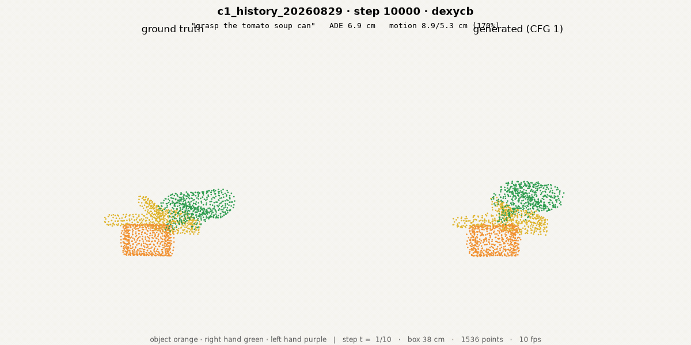
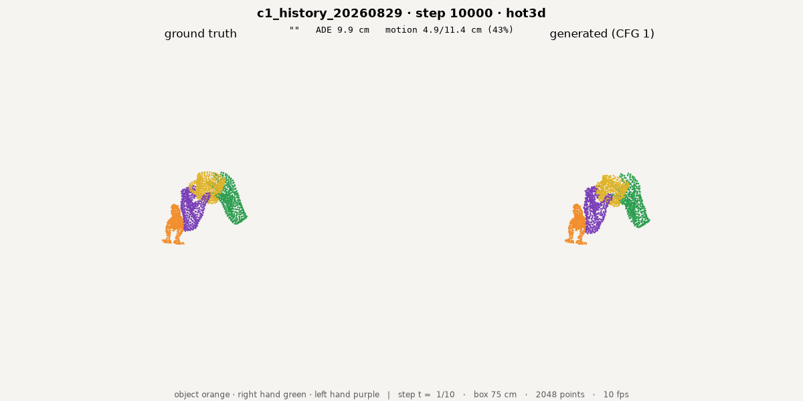

first arm ever to beat a zero predictor · object rigid residual 0.92 cm · ranked by cosine, not ADE: a collapsed arm can win on error by not moving · ground truth left, generated right
Appendix #4 · D1 · baseline, frame 0 only
Ranked #4 of 7 by direction cosine — 0.266, ADE 15.08 cm
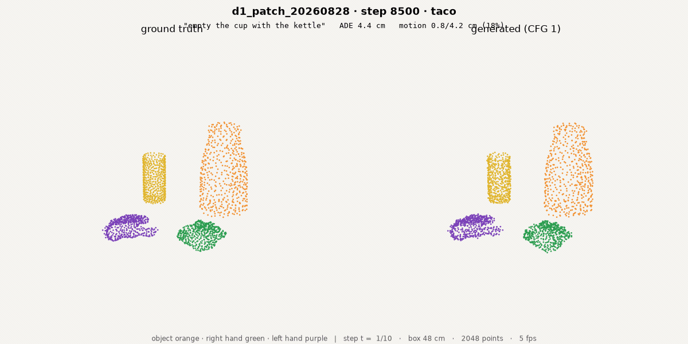
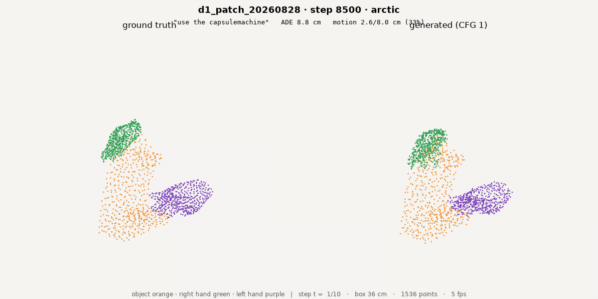


the reference every arm is measured against · object rigid residual 1.11 cm · ranked by cosine, not ADE: a collapsed arm can win on error by not moving · ground truth left, generated right
Appendix #5 · D3 · block-causal time
Ranked #5 of 7 by direction cosine — 0.206, ADE 16.54 cm

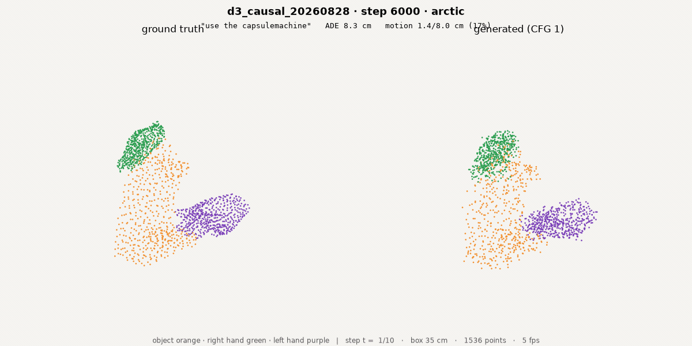
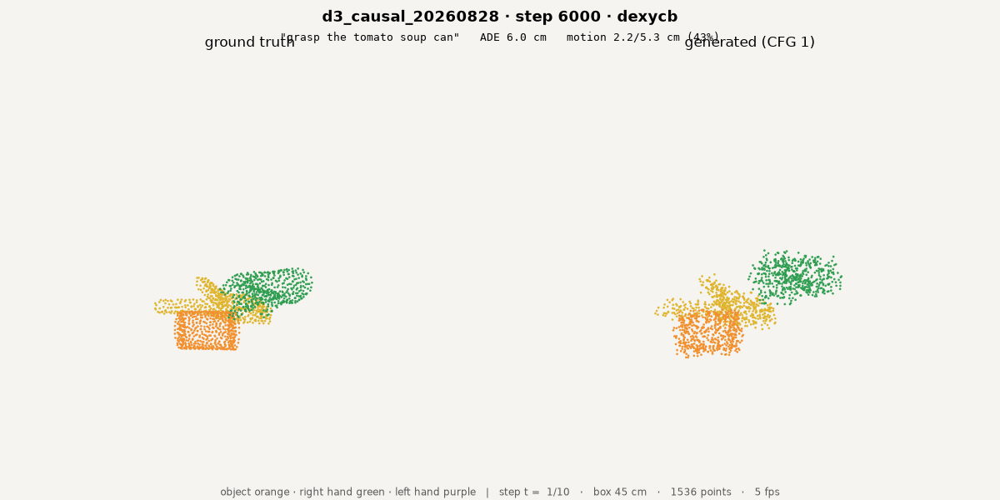
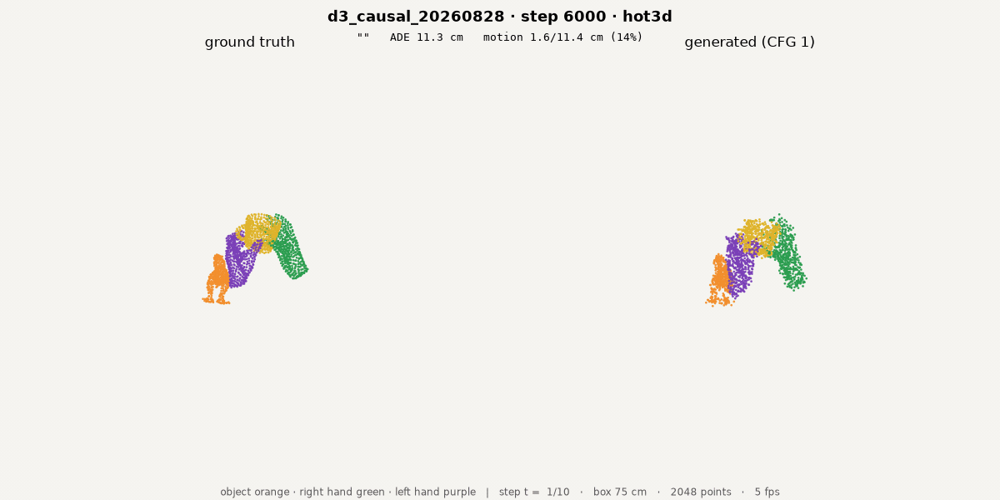
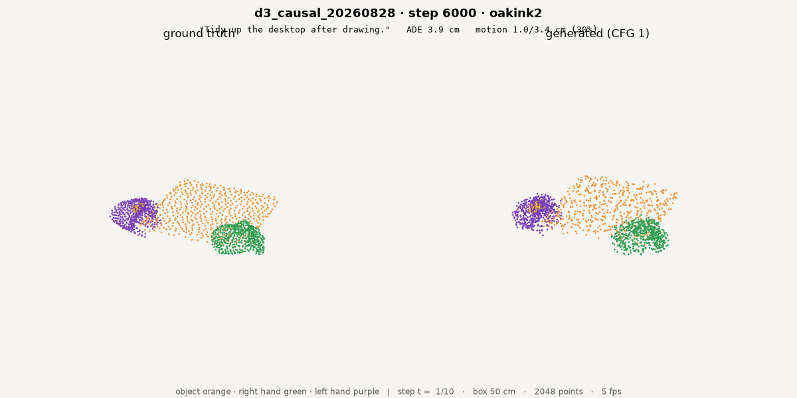
lost to the baseline · ranked by cosine, not ADE: a collapsed arm can win on error by not moving · ground truth left, generated right
Appendix #6 · D2 · PTv3 windows, 2,188 steps
Ranked #6 of 7 by direction cosine — 0.193, ADE 18.55 cm


9x fewer samples — not comparable · ranked by cosine, not ADE: a collapsed arm can win on error by not moving · ground truth left, generated right
Appendix #7 · D5 · per-step normalised target
Ranked #7 of 7 by direction cosine — 0.066, ADE 14.97 cm
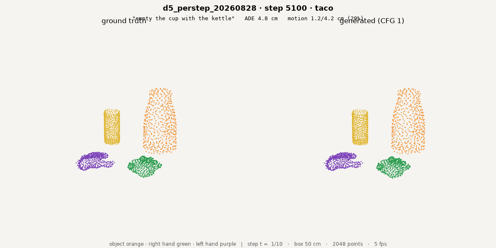


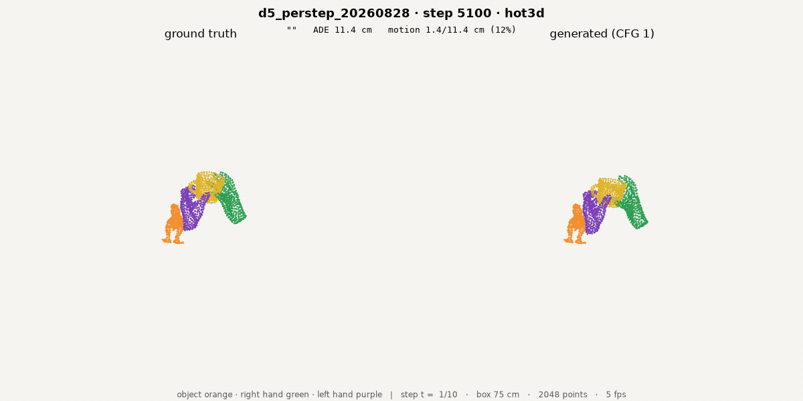
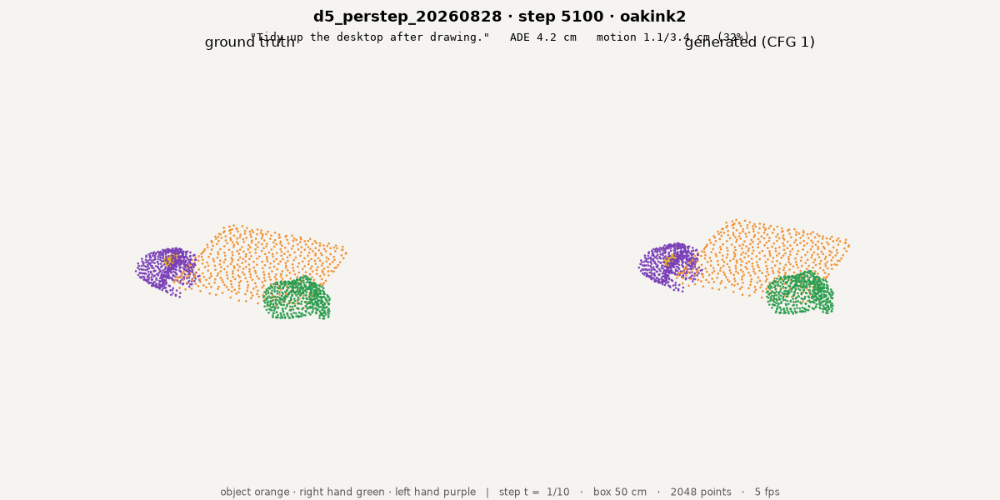
low error only because it stopped moving (16 %) · ranked by cosine, not ADE: a collapsed arm can win on error by not moving · ground truth left, generated right
Appendix: five-second chained rollouts
Five one-second chunks, each re-predicted from the previous endpoint


closed-loop chunking — the mode General Flow and MolmoMotion deploy in · our open-loop horizon is one second
Appendix: five-second chained rollouts
Five one-second chunks, each re-predicted from the previous endpoint


closed-loop chunking — the mode General Flow and MolmoMotion deploy in · our open-loop horizon is one second
Appendix: figures — data and tokenisation
How the data is built and how points become tokens


see also deck #6 for the full architecture derivation
Appendix: figures — arms and diagnosis
What each arm changed, and the error decomposition that redirected us


diagnosis.svg is what showed direction, not magnitude, is the binding constraint
Appendix: MolmoMotion (D4)
Blocked on imagery that does not exist in our data — owner verification pending


these three need the owner's eyes: whether the render is recognisable, and which alignment panel is correct